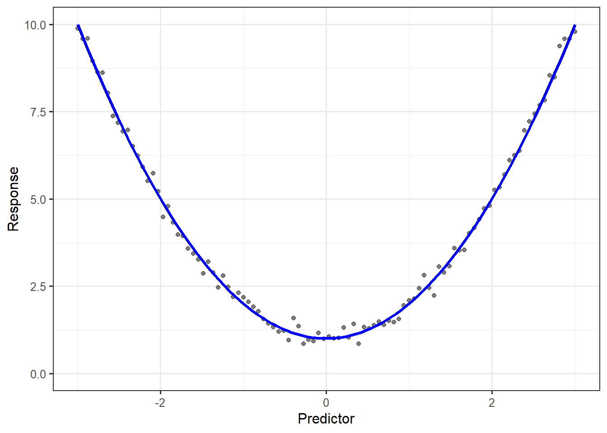
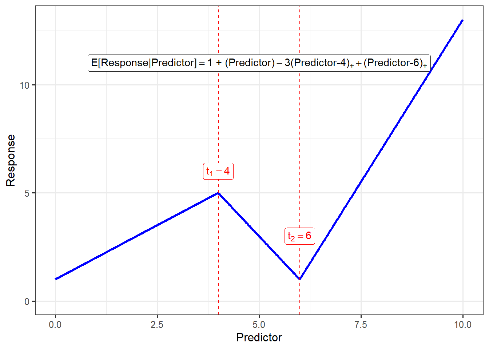
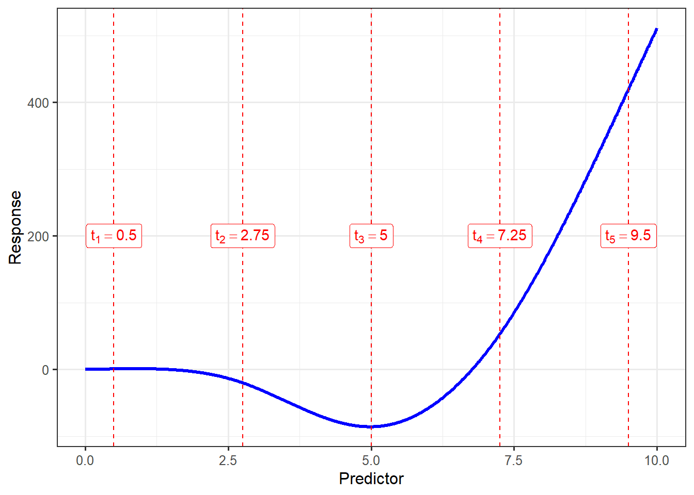

12 Modeling Curvature (Splines)
In addition to conditions on the error term, the classical regression model (Definition 4.3) requires that the predictors enter the model linearly. It is often the case, however, that the relationship between the response and a predictor is not linear, even after accounting for other predictors. Ignoring this curvature, essentially leaving the deterministic portion of the model incorrectly specified, can result in incorrect conclusions. Fortunately, the linear model framework is flexible enough to model curvature. The apparent contradiction that a “linear” model can address curvature comes from a misunderstanding of what it means to be a “linear” model.
Definition 12.1 (Linear Model) A model is said to be linear if it can be expressed as a linear combination of the parameters. That is, the linearity does not refer to the form of the predictors but the form of the parameters.
The beauty of this understanding of linearity is that it allows us to capture curvature, provided that we can represent that curvature through the addition of additional predictors. As a simple example, suppose we have a response that has a parabolic relationship with a predictor (Figure 12.1).
Such a relationship could be captured by the linear model
\[(\text{Response})_i = \beta_0 + \beta_1 (\text{Predictor})_i^2 + \varepsilon_i.\]
The mean response will clearly generate curvature, but the deterministic portion is linear in the parameters; let \(\mathbf{x}_i\) represent the vector of all predictors for the \(i\)-th observation, including the intercept. In this case we have
\[\mathbf{x}_i = \begin{pmatrix} 1 \\ (\text{Predictor})_i \end{pmatrix}.\]
And, let \(\boldsymbol{\beta}\) represent the parameter vector
\[\boldsymbol{\beta} = \begin{pmatrix} \beta_0 \\ \beta_1 \end{pmatrix}.\]
Then, we can write the above model as
\[(\text{Response})_i = \mathbf{x}_i^\top \boldsymbol{\beta} + \varepsilon_i\]
where we have that the deterministic portion is the product of two vectors; being able to express the model in this form satisfies the definition of a linear model.
Note
For those not as comfortable with matrix algebra, essentially, the model will be linear in the parameters as long as we can express it in the form
\[(\text{Response})_i = \beta_0 + \sum_{j=1}^{p} \beta_j (\text{Something not involving parameters})_i + \varepsilon_i\]
even if the “something not involving parameters” consists of nonlinear transformations of variables in our data set.
We are interested in investigating transformations of the predictors to add to the model that would capture curvature. In the above example, we knew the form of the curvature we wanted to model (a parabola shifted up from the origin). In practice, we often will not know the form of the curvature, just that it exists (from the plots of the residuals against the predictor). And, that curvature may not be modeled well with a high-degree polynomial (or would require a polynomial of such a high degree it would not be practical). In such cases, splines are very useful.
Definition 12.2 (Spline) A spline is a continuous piecewise polynomial used to model curvature. The points that define the piecewise components are called knot points; the functional form is allowed to change at the knot points.
Definition 12.3 (Linear Spline) A linear spline is a continuous piecewise linear function.
A linear spline is perfect for capturing relationships which appear to be linear over regions, but for which the relationship is different in each of those regions. For example, a “V” relationship would suggest that as the predictor increases, the response tends to decrease up to a point (the bottom of the V); past that point (which is the “knot point” here), as the predictor increases, the response tends to increase as well. A linear spline can be placed into the linear model framework.
Formula for Linear Spline
A response can be related to a predictor using a linear spline with \(k\) knot points, call them \(t_1, t_2, \dotsc, t_k\) using the following formula:
\[(\text{Response})_i = \beta_0 + \beta_1 (\text{Predictor})_i + \sum_{j=1}^{k} \beta_{j+1} \left((\text{Predictor})_i - t_j\right)_{+} + \varepsilon_i \tag{12.1}\]
where \(u_{+}\) takes the value \(u\) when \(u > 0\) and takes the value 0 otherwise. Capturing curvature using a linear spline with \(k\) knot points requires \(k\) additional terms.
Figure 12.2 illustrates a linear spline with two knot points.

Note
In practice, the knot points for a linear spline are generally determined by the discipline expert based on some scientific reason why the relationship might change at that particular value of the predictor.
While the above definition of the linear spline considers only a single predictor, we can add a spline to a model which has additional predictors. That is, we could consider a model like
\[(\text{Response})_i = \beta_0 + \beta_1 (\text{Predictor 1})_i + \beta_2 \left((\text{Predictor 1})_i - t_1\right)_+ + \beta_3(\text{Predictor } 2)_i + \varepsilon_i.\]
Here, we have placed a linear spline with a single knot point on the first predictor, but the second predictor enters the model linearly.
Once we have the additional elements in the model to capture the curvature, we can actually perform a hypothesis test to determine if the additional complexity is needed. Consider Equation 12.1, the hypothesis
\[H_0: \beta_2 = \beta_3 = \dotsc = \beta_{k+1} = 0\]
imposes the constraint that each of the spline components be removed from the model. That is, under this hypothesis, a linear relationship is sufficient for modeling the relationship between the response and the predictor.
There are plenty of forms of curvature which would not be captured by a linear spline. When we have a more complex relationship that needs to be modeled, we use a restricted cubic spline.
Definition 12.4 (Restricted Cubic Spline) A restricted cubic spline is a continuous function comprised of piecewise cubic polynomials for which the tails of the spline have been restricted to be linear.
Restricted cubic splines (related to natural splines in the computational science community) are smooth at the knot points (meaning they have nice mathematical properties). Further, it has been shown empirically that restricted cubic splines are often flexible enough to approximate nearly any nonlinear relationship. As flexible as they are, what is really amazing is that we can embed restricted cubic splines into the linear model framework.
Formula for Resctricted Cubic Spline
A response can be related to a predictor using a restricted cubic spline with \(k\) knot points, call them \(t_1, t_2, \dotsc, t_k\) using the following formula:
\[(\text{Response})_i = \beta_0 + \beta_1 (\text{Predictor})_i + \sum_{j=1}^{k-2} \beta_{j+1} x_{j,i} + \varepsilon_i\]
where
\[ \begin{aligned} x_{j,i} &= \left((\text{Predictor})_i - t_j\right)^3_{+} - \frac{\left((\text{Predictor})_i - t_{k-1}\right)^3_{+} \left(t_k - t_j\right)}{t_k - t_{k-1}} \\ &\qquad +\frac{\left((\text{Predictor})_i - t_k\right)^3_{+} \left(t_{k-1} - t_j\right)}{t_k - t_{k-1}} \end{aligned} \tag{12.2}\]
and \(u_{+}\) is a function taking the value \(u\) when \(u > 0\) and the value 0 otherwise. Capturing curvature using a restricted cubic spline with \(k\) knot points requires \(k-2\) additional terms.
Empirical studies have shown that generally only \(k = 5\) knot points are needed, and these are set at the 5-th, 27.5-th, 50-th, 72.5-th, and 95-th percentiles. This ensures there is enough data in each region to appropriately capture the curvature.
Similar to linear splines, we can add a restricted cubic spline for a variable to a model which has additional predictors. For example,
\[ \begin{aligned} (\text{Response})_i &= \beta_0 + \beta_1 (\text{Predictor 1})_i + \beta_2 \left((\text{Predictor 1})_i - t_1\right)_+^3 \\ &\qquad - \beta_2 \frac{\left((\text{Predictor 1})_i - t_2\right)_+^3 \left(t_3 - t_1\right)}{t_3 - t_2} + \beta_2 \frac{\left((\text{Predictor 1})_i - t_3\right)_+^3 \left(t_2 - t_1\right)}{t_3 - t_2} \\ &\qquad + \beta_3 (\text{Predictor 2})_i + \varepsilon_i \end{aligned} \]
captures curvature in the first predictor using a restricted cubic spline with three knot points while allowing the second predictor to enter the model linearly. We note that while it appears this model is much more complex, only a single additional term is needed to capture the curvature on the first predictor.
Once we have the additional elements in the model to capture the curvature with the spline, we can actually perform a hypothesis test to determine if the additional complexity is needed. Consider the model in Equation 12.2, the hypothesis
\[H_0: \beta_2 = \beta_3 = \dotsc = \beta_{k-1} = 0\]
imposes the constraint that each of the spline components be removed from the model. That is, under this hypothesis, a linear relationship is sufficient for modeling the relationship between the response and the predictor.
Figure 12.3 illustrates a restricted cubic spline with five knot points. We point out that there is quite a bit of curvature here, and yet this is captured by a linear model!

Both types of splines can be fit using standard software if we are willing to program the above formulas; however, statistical software often has a direct implementation.
There are nonparametric approaches to capturing curvature as well (“loess” curves are popular choices). We prefer splines to nonparametric approaches as splines require less computation and can be easily implemented in any software. Further, splines can be placed in a semiparametric model allowing us to capture complex curvature without extremely large sample sizes. Finally, since splines can be implemented within a linear model, we can easily test to determine if the additional complexity is needed.
Linear splines allow for very easy interpretation since the relationships are linear in each region. Restricted cubic splines, in contrast, have intractable interpretations but provide a lot of flexibility. In general, if the predictor that requires a spline is the primary variable of interest, we recommend trying a linear spline. If however, the predictor is just being adjusted for in the model, and the curvature is not of primary importance, using a restricted cubic spline with five knot points is typically sufficient.
Note
When a categorical predictor is modeled using a series of indicator variables, linearity cannot be violated for these components. This is known as a “saturated” model because no simplifying assumptions about the structure have been enforced. As a result, violations of linearity and their subsequent adjustments (like splines) are only considered for quantitative predictors.
As in the previous chapters of this unit, we introduced splines in the context of the linear model. However, they can be incorporated into a vast number of regression models.